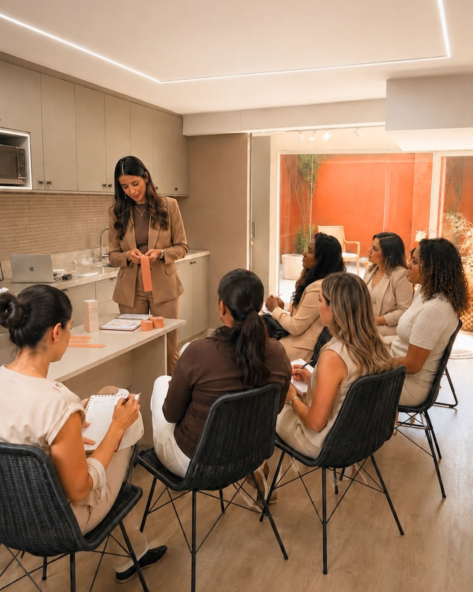
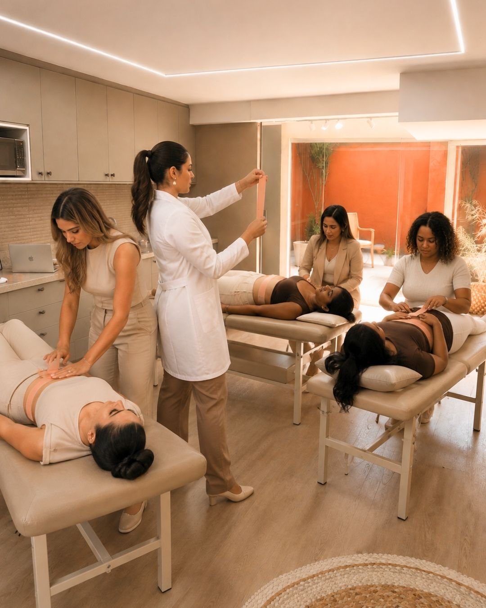

Um dia inteiro, mão na massa, direto com quem é pioneira da técnica em São Paulo e já realizou mais de 800 atendimentos reais. Você sai daqui sabendo aplicar, sabendo cobrar e sabendo vender.

Quantas vezes você já viu um vídeo de Taping Pós-Parto, achou incrível, salvou no "quero aprender", e nunca aplicou de verdade?
Não é falta de conhecimento. É falta de mão treinada, de alguém corrigindo sua tensão, seu corte, seu posicionamento, em tempo real, numa aplicação de verdade.
Se você:
Existe uma diferença entre entender a técnica e confiar na sua própria mão quando a paciente está na sua frente.
Essa confiança nasce de um jeito só: alguém ao seu lado, olhando exatamente onde você está posicionando os dedos, ajustando a tensão que você aplicou, corrigindo o ângulo antes que aquele erro se torne hábito.
É ter alguém pegando na sua mão e mostrando, na prática, o que nenhuma tela sozinha ensina: quanto de tensão é suficiente, o momento certo de soltar a fita, como ler a pele antes mesmo de tocar nela.
É exatamente essa correção em tempo real que a Formação Presencial entrega: um dia inteiro para você destravar de verdade, com alguém corrigindo sua mão até isso se tornar segurança.
Anatomia aplicada, mecanismos de ação, avaliação da pele, indicações e contraindicações reais.
Como decidir o protocolo certo para cesárea e parto normal, e os erros que comprometem a pele e o resultado da aplicação.
Aplicação prática, em dupla entre as próprias alunas, com correção individual da sua técnica, tensão e posicionamento.
Como estruturar o serviço na sua rotina e comunicar valor, com a Aula Bônus de Proposta Comercial.
A maioria dos erros em Taping vem de tensão errada ou direção errada.
Aqui você aprende, na prática, com correção em tempo real, a:

Mais de 800 atendimentos reais. Não são vídeos nem teoria de artigo, são mais de 800 pacientes reais, com todas as variações que só a prática clínica ensina.
Turma pequena, com correção prática individual em cada aplicação, por isso as inscrições são conduzidas com atenção especial a cada profissional.
Como estruturar, precificar e apresentar esse serviço para a paciente sem parecer caro, e sem trabalhar de graça nunca mais.
Espaço exclusivo para tirar dúvida, trocar caso clínico e continuar evoluindo depois do curso.
Ou pode dedicar um único dia para sair com a mão treinada, a técnica corrigida, uma proposta comercial pronta e uma rede de apoio, pronta para começar a faturar com isso.
SIM, QUERO PARTICIPAR